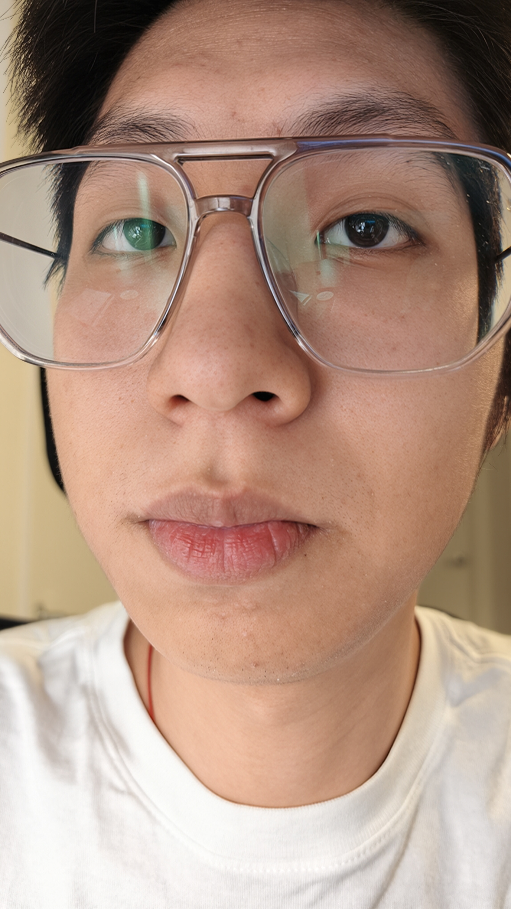
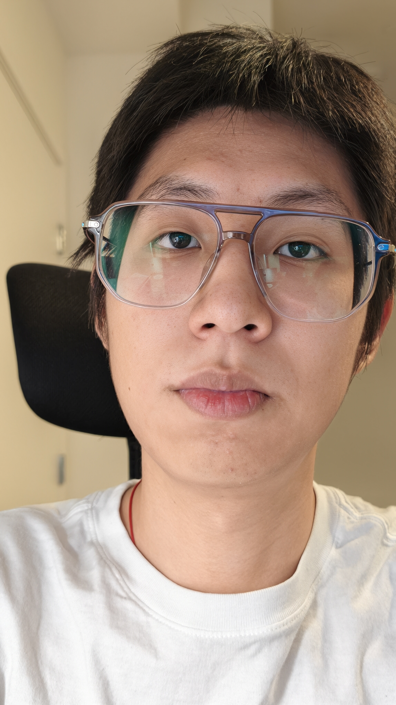
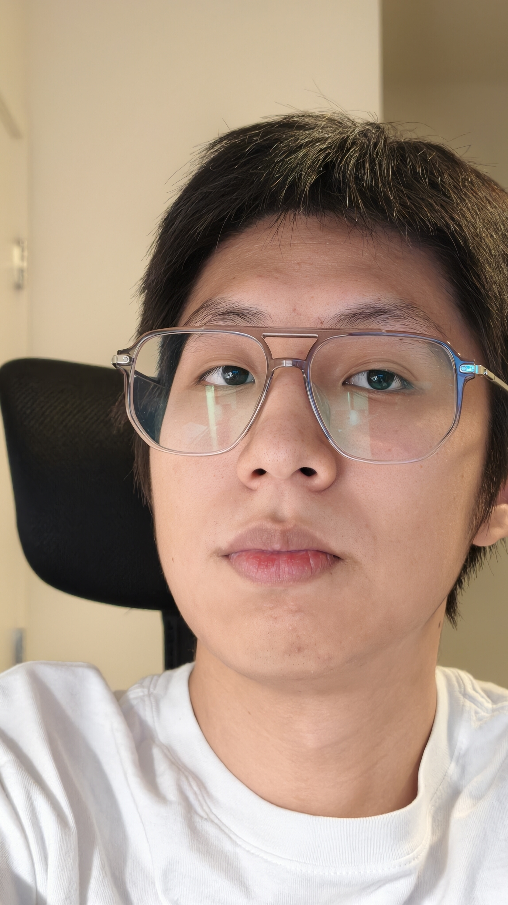
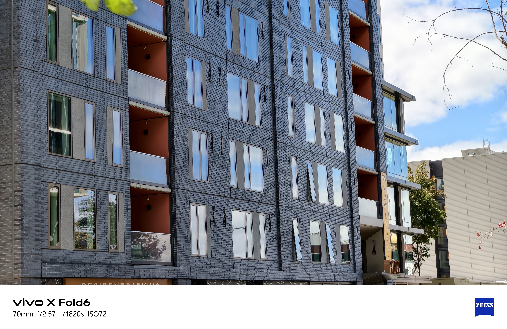
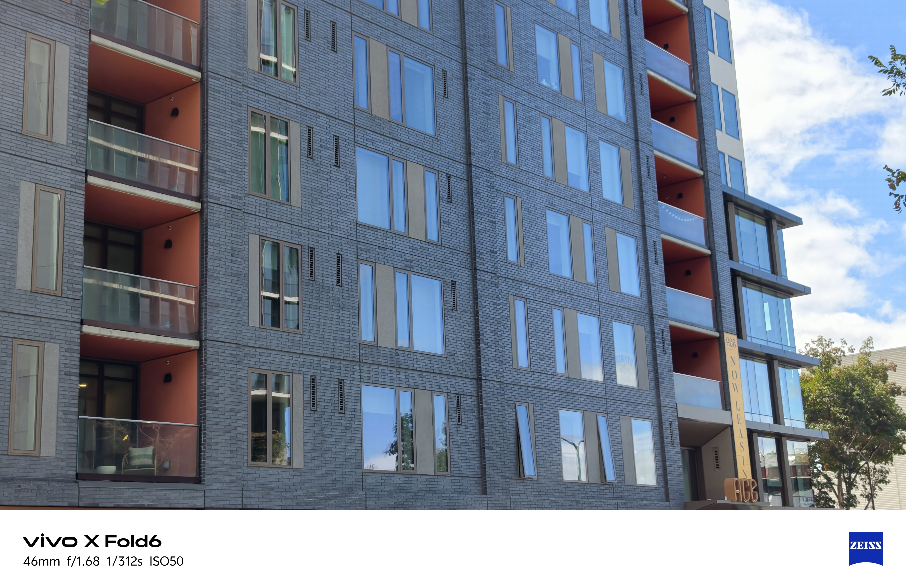

Project 0
Becoming Friends
with Your Camera
Part 1 →



Up close, the nose looks larger and the face looks stretched. Moving the camera back makes the face look more natural, while zooming in keeps it the same size in the photo.
Part 2 →


When I stood farther away and zoomed in, the objects in front and back looked closer together. When I moved closer and zoomed out, the space between them became more obvious. Even though the front object stayed about the same size, the background changed because I moved the camera.
Part 3 →
Filmed on an iPhone 14 Pro in Xinjiang, China. The vehicle moved forward as the camera zoomed out, creating a dolly-zoom effect. Exact focal-length values were not recorded.